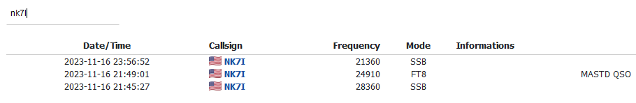

[Date Prev][Date Next][Thread Prev][Thread Next][Date Index][Thread Index]
Re: [NCDXC Chat] Spot: PR0T logbook
Finally got the log to work for a moment.
Bob KB6CIO
On Friday, November 17, 2023 at 08:35:32 AM PST, Rick NK7I via Chat <chat@ncdxc.org> wrote:
My 40 phone contact was solid, 100% correct. But the logbook isn't
coming up (times out) here... HamPass = thumbs down (total failure).
But I have (saw the logbook previously) the ATNO in two modes (phone
twice, digital) while I wait for CW (or a new band mode, duh).
In the meantime, I presume not all logs have been uploaded and/or the
internet is not what they hoped it would be (is it ever?).
As always, patience (RIGHT NOW!!! lol).
73,
Rick nk7i
On 11/17/2023 8:23 AM, Steve Dyer W1SRD via Chat wrote:
> I thought I worked him too on 40 but I don't see mine nor Pauls QSO in
> the log.
> Steve
_______________________________________________
Chat mailing list
Chat@ncdxc.org
http://mail.ncdxc.org/mailman/listinfo/chat_ncdxc.org

{kind=link}